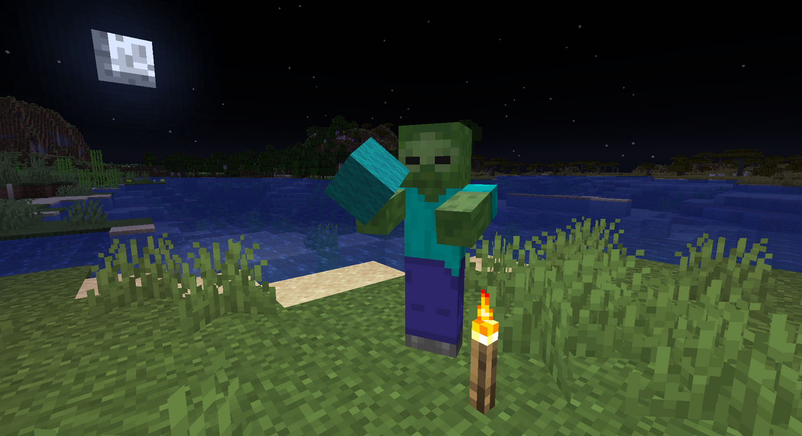

- Menu de Navegação
Zumbi

O Zumbi é uma das criaturas hostis mais comuns do Minecraft, pertencente à categoria dos
mortos-vivos.
Ele surge naturalmente em áreas escuras, tanto na superfície durante a noite quanto
em cavernas e
estruturas subterrâneas a qualquer hora do dia.
| Pontos de Vida: 20 (10 |
| Comportamento: Hostil |
| Categoria: Morto-vivo |
Comportamento
Zumbis perseguem qualquer jogador ou aldeão dentro do seu alcance de detecção, atacando de perto com
golpes físicos. Durante o dia, eles pegam fogo caso fiquem expostos diretamente à luz solar — a menos
que
estejam usando algum capacete ou estejam na água, sombra ou debaixo de blocos.
Em dificuldades mais altas, zumbis podem arrombar portas de madeira, tornando abrigos simples menos seguros durante ataques noturnos.
Variantes
Existem variantes de zumbis associadas a diferentes biomas, como os Zumbis de Habitante do Gelo
(encontrados em regiões geladas) e os Afogados, uma variante aquática que pode surgir em
oceanos
e rios, e que carrega tridentes com uma certa raridade.
Como se defender
Manter áreas bem iluminadas com tochas ou lanternas é a forma mais eficiente de evitar a geração de
zumbis próximo a uma base. Portas de metal, muros altos e fossos também ajudam a impedir a
aproximação
dessas criaturas durante a noite.